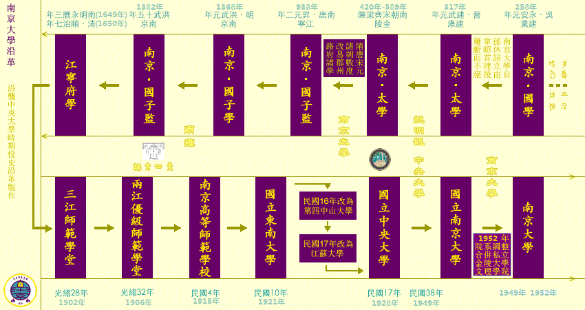

愿为夸父，化作春秋与河山
南京大学历史上曾历经多次变迁，亦是中国第一所集教学和研究于一体的现代大学。中华民国政府撤离南京后，中华人民共和国成立前夕，由“国立中央大学”易名“国立南京大学”，翌年径称“南京大学”，沿用至今。
自民国南京高师成立以来，南京大学经历过两次大的系科变迁，一次是北伐胜利国民政府成立之后实行大学区制，河海工科大学、江苏医科大学、江苏法政大学、上海商科大学等八所学校并入；一次是中华人民共和国成立后不久进行院系调整，主要并入金陵大学文理学院，同时南京大学分出除文理学院之外的大部分院系。在南高时期，除基本的文理科外，已开设农、工、商、教育等专修科；国立东南大学和国立中央大学时期，为全国学科最为齐备的大学；改革开放后，南京大学重新发展为拥有众多学科的综合大学。

留驻南京：
1.文学院，理学院--南京大学
2.工学院部分院系--南京工学院--东南大学
3.工学院水利系--河海大学
4.工学院化工系--南京化工学院--南京化工大学--南京工业大学
5.师范学院--南京师范大学
6.农学院--南京农业大学
7.农学院林学系--南京林业大学
8.气象工程系--南京气象学院--南京信息工程大学
外迁：
9.商学院--上海财经大学
10.工学院航空系--华东航空学院--西北工业大学（西安）
11.医学院--第五军医大学--第四军医大学
12.工学院食品工程系--无锡轻工业学院--江南大学（无锡）
13.工学院农业机械系--江苏工学院--江苏理工大学--江苏大学（镇江）
14.法学院--华东政法学院（上海）
15.中科院心理研究所
16.影音部---中央电影学校---北京电影学院
17.中央大学医学院－－上海医学院－－上海医科大学－－复旦大学医学院
18.工学院电子工程系有线电部分－－成都电讯工程学院－－电子科技大学（成都）
19.国立音乐学院－－中央音乐学院